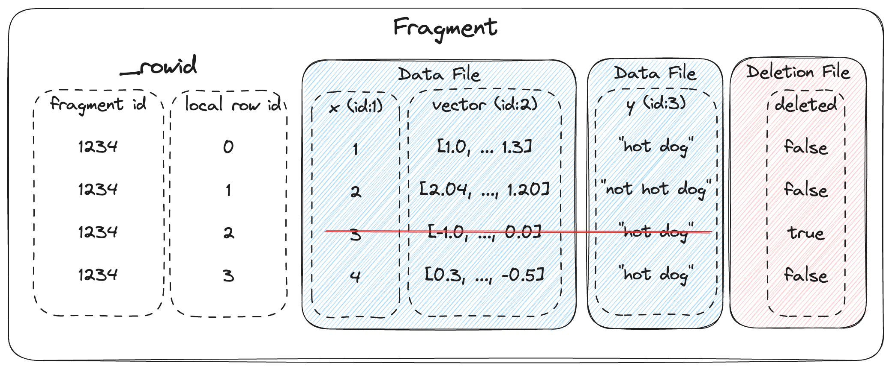
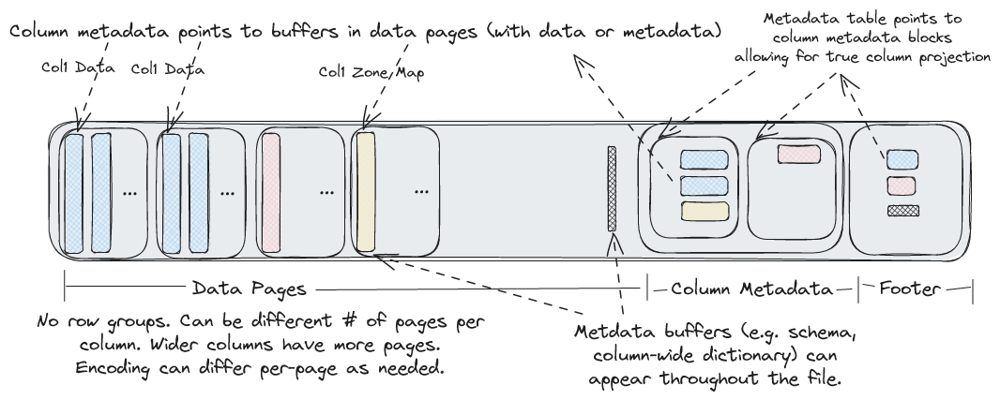
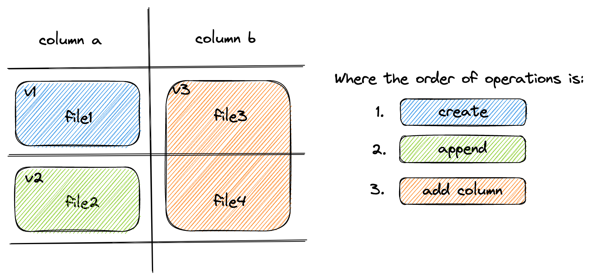
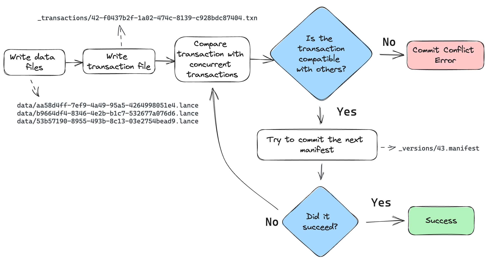
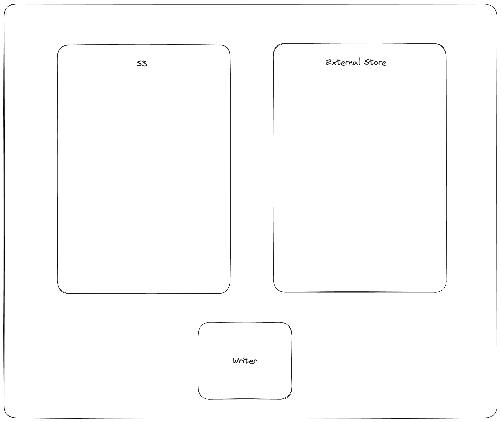
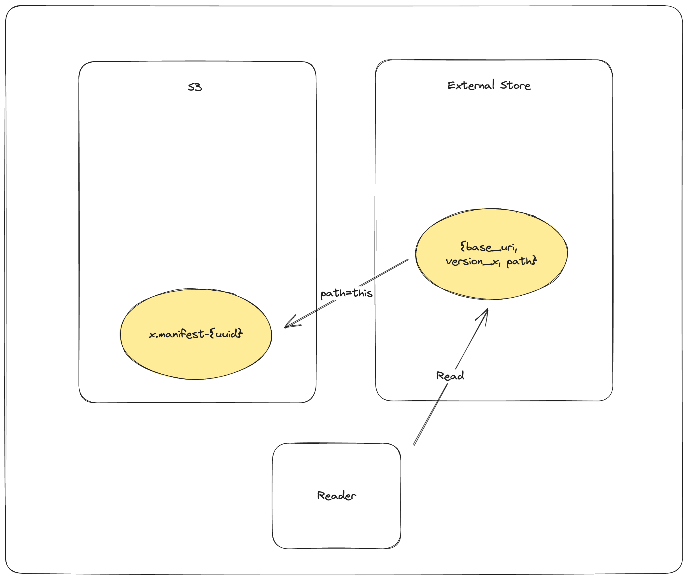

Lance Format¶
The Lance format contains both a table format and a columnar file format. When combined, we refer to it as a data format. Because Lance can store both structured and unstructured multimodal data, Lance typically refers to tables as "datasets". A Lance dataset is designed to efficiently handle secondary indices, fast ingestion and modification of data, and a rich set of schema and data evolution features.
Dataset Directory¶
A Lance Dataset is organized in a directory.
/path/to/dataset:
data/*.lance -- Data directory
_versions/*.manifest -- Manifest file for each dataset version.
_indices/{UUID-*}/index.idx -- Secondary index, each index per directory.
_deletions/*.{arrow,bin} -- Deletion files, which contain ids of rows
that have been deleted.
A Manifest file includes the metadata to describe a version of the dataset.
message Manifest {
// All fields of the dataset, including the nested fields.
repeated lance.file.Field fields = 1;
// Fragments of the dataset.
repeated DataFragment fragments = 2;
// Snapshot version number.
uint64 version = 3;
// The file position of the version auxiliary data.
// * It is not inheritable between versions.
// * It is not loaded by default during query.
uint64 version_aux_data = 4;
// Schema metadata.
map<string, bytes> metadata = 5;
message WriterVersion {
// The name of the library that created this file.
string library = 1;
// The version of the library that created this file. Because we cannot assume
// that the library is semantically versioned, this is a string. However, if it
// is semantically versioned, it should be a valid semver string without any 'v'
// prefix. For example: `2.0.0`, `2.0.0-rc.1`.
string version = 2;
}
// The version of the writer that created this file.
//
// This information may be used to detect whether the file may have known bugs
// associated with that writer.
WriterVersion writer_version = 13;
// If present, the file position of the index metadata.
optional uint64 index_section = 6;
// Version creation Timestamp, UTC timezone
google.protobuf.Timestamp timestamp = 7;
// Optional version tag
string tag = 8;
// Feature flags for readers.
//
// A bitmap of flags that indicate which features are required to be able to
// read the table. If a reader does not recognize a flag that is set, it
// should not attempt to read the dataset.
//
// Known flags:
// * 1: deletion files are present
// * 2: move_stable_row_ids: row IDs are tracked and stable after move operations
// (such as compaction), but not updates.
// * 4: use v2 format (deprecated)
// * 8: table config is present
uint64 reader_feature_flags = 9;
// Feature flags for writers.
//
// A bitmap of flags that indicate which features are required to be able to
// write to the dataset. if a writer does not recognize a flag that is set, it
// should not attempt to write to the dataset.
//
// The flags are the same as for reader_feature_flags, although they will not
// always apply to both.
uint64 writer_feature_flags = 10;
// The highest fragment ID that has been used so far.
//
// This ID is not guaranteed to be present in the current version, but it may
// have been used in previous versions.
//
// For a single file, will be zero.
optional uint32 max_fragment_id = 11;
// Path to the transaction file, relative to `{root}/_transactions`
//
// This contains a serialized Transaction message representing the transaction
// that created this version.
//
// May be empty if no transaction file was written.
//
// The path format is "{read_version}-{uuid}.txn" where {read_version} is the
// version of the table the transaction read from, and {uuid} is a
// hyphen-separated UUID.
string transaction_file = 12;
// The next unused row id. If zero, then the table does not have any rows.
//
// This is only used if the "move_stable_row_ids" feature flag is set.
uint64 next_row_id = 14;
message DataStorageFormat {
// The format of the data files (e.g. "lance")
string file_format = 1;
// The max format version of the data files.
//
// This is the maximum version of the file format that the dataset will create.
// This may be lower than the maximum version that can be written in order to allow
// older readers to read the dataset.
string version = 2;
}
// The data storage format
//
// This specifies what format is used to store the data files.
DataStorageFormat data_format = 15;
// Table config.
//
// Keys with the prefix "lance." are reserved for the Lance library. Other
// libraries may wish to similarly prefix their configuration keys
// appropriately.
map<string, string> config = 16;
// The version of the blob dataset associated with this table. Changes to
// blob fields will modify the blob dataset and update this version in the parent
// table.
//
// If this value is 0 then there are no blob fields.
uint64 blob_dataset_version = 17;
}
Fragments¶
DataFragment represents a chunk of data in the dataset. Itself includes one or more DataFile,
where each DataFile can contain several columns in the chunk of data.
It also may include a DeletionFile, which is explained in a later section.
message DataFragment {
// Unique ID of each DataFragment
uint64 id = 1;
repeated DataFile files = 2;
// File that indicates which rows, if any, should be considered deleted.
DeletionFile deletion_file = 3;
// TODO: What's the simplest way we can allow an inline tombstone bitmap?
// A serialized RowIdSequence message (see rowids.proto).
//
// These are the row ids for the fragment, in order of the rows as they appear.
// That is, if a fragment has 3 rows, and the row ids are [1, 42, 3], then the
// first row is row 1, the second row is row 42, and the third row is row 3.
oneof row_id_sequence {
// If small (< 200KB), the row ids are stored inline.
bytes inline_row_ids = 5;
// Otherwise, stored as part of a file.
ExternalFile external_row_ids = 6;
} // row_id_sequence
// Number of original rows in the fragment, this includes rows that are
// now marked with deletion tombstones. To compute the current number of rows,
// subtract `deletion_file.num_deleted_rows` from this value.
uint64 physical_rows = 4;
}
The overall structure of a fragment is shown below. One or more data files store the columns of a fragment. New columns can be added to a fragment by adding new data files. The deletion file (if present), stores the rows that have been deleted from the fragment.

Every row has a unique id, which is an u64 that is composed of two u32s: the fragment id and the local row id. The local row id is just the index of the row in the data files.
File Structure¶
Each .lance file is the container for the actual data.

At the tail of the file, ColumnMetadata protobuf blocks are used to describe the encoding of the columns in the file.
message ColumnMetadata {
// This describes a page of column data.
message Page {
// The file offsets for each of the page buffers
//
// The number of buffers is variable and depends on the encoding. There
// may be zero buffers (e.g. constant encoded data) in which case this
// could be empty.
repeated uint64 buffer_offsets = 1;
// The size (in bytes) of each of the page buffers
//
// This field will have the same length as `buffer_offsets` and
// may be empty.
repeated uint64 buffer_sizes = 2;
// Logical length (e.g. # rows) of the page
uint64 length = 3;
// The encoding used to encode the page
Encoding encoding = 4;
// The priority of the page
//
// For tabular data this will be the top-level row number of the first row
// in the page (and top-level rows should not split across pages).
uint64 priority = 5;
}
// Encoding information about the column itself. This typically describes
// how to interpret the column metadata buffers. For example, it could
// describe how statistics or dictionaries are stored in the column metadata.
Encoding encoding = 1;
// The pages in the column
repeated Page pages = 2;
// The file offsets of each of the column metadata buffers
//
// There may be zero buffers.
repeated uint64 buffer_offsets = 3;
// The size (in bytes) of each of the column metadata buffers
//
// This field will have the same length as `buffer_offsets` and
// may be empty.
repeated uint64 buffer_sizes = 4;
}
A Footer describes the overall layout of the file. The entire file layout is described here:
// Note: the number of buffers (BN) is independent of the number of columns (CN)
// and pages.
//
// Buffers often need to be aligned. 64-byte alignment is common when
// working with SIMD operations. 4096-byte alignment is common when
// working with direct I/O. In order to ensure these buffers are aligned
// writers may need to insert padding before the buffers.
//
// If direct I/O is required then most (but not all) fields described
// below must be sector aligned. We have marked these fields with an
// asterisk for clarity. Readers should assume there will be optional
// padding inserted before these fields.
//
// All footer fields are unsigned integers written with little endian
// byte order.
//
// ├──────────────────────────────────┤
// | Data Pages |
// | Data Buffer 0* |
// | ... |
// | Data Buffer BN* |
// ├──────────────────────────────────┤
// | Column Metadatas |
// | |A| Column 0 Metadata* |
// | Column 1 Metadata* |
// | ... |
// | Column CN Metadata* |
// ├──────────────────────────────────┤
// | Column Metadata Offset Table |
// | |B| Column 0 Metadata Position* |
// | Column 0 Metadata Size |
// | ... |
// | Column CN Metadata Position |
// | Column CN Metadata Size |
// ├──────────────────────────────────┤
// | Global Buffers Offset Table |
// | |C| Global Buffer 0 Position* |
// | Global Buffer 0 Size |
// | ... |
// | Global Buffer GN Position |
// | Global Buffer GN Size |
// ├──────────────────────────────────┤
// | Footer |
// | A u64: Offset to column meta 0 |
// | B u64: Offset to CMO table |
// | C u64: Offset to GBO table |
// | u32: Number of global bufs |
// | u32: Number of columns |
// | u16: Major version |
// | u16: Minor version |
// | "LANC" |
// ├──────────────────────────────────┤
//
// File Layout-End
File Version¶
The Lance file format has gone through a number of changes including a breaking change from version 1 to version 2. There are a number of APIs that allow the file version to be specified. Using a newer version of the file format will lead to better compression and/or performance. However, older software versions may not be able to read newer files.
In addition, the latest version of the file format (next) is unstable and should not be used for production use cases.
Breaking changes could be made to unstable encodings and that would mean that files written with these encodings are
no longer readable by any newer versions of Lance. The next version should only be used for experimentation and
benchmarking upcoming features.
The following values are supported:
| Version | Minimal Lance Version | Maximum Lance Version | Description |
|---|---|---|---|
| 0.1 | Any | Any | This is the initial Lance format. |
| 2.0 | 0.16.0 | Any | Rework of the Lance file format that removed row groups and introduced null support for lists, fixed size lists, and primitives |
| 2.1 (unstable) | None | Any | Enhances integer and string compression, adds support for nulls in struct fields, and improves random access performance with nested fields. |
| legacy | N/A | N/A | Alias for 0.1 |
| stable | N/A | N/A | Alias for the latest stable version (currently 2.0) |
| next | N/A | N/A | Alias for the latest unstable version (currently 2.1) |
File Encodings¶
Lance supports a variety of encodings for different data types. The encodings are chosen to give both random access and scan performance. Encodings are added over time and may be extended in the future. The manifest records a max format version which controls which encodings will be used. This allows for a gradual migration to a new data format so that old readers can still read new data while a migration is in progress.
Encodings are divided into "field encodings" and "array encodings".
Field encodings are consistent across an entire field of data,
while array encodings are used for individual pages of data within a field.
Array encodings can nest other array encodings (e.g. a dictionary encoding can bitpack the indices)
however array encodings cannot nest field encodings.
For this reason data types such as Dictionary<UInt8, List<String>>
are not yet supported (since there is no dictionary field encoding)
Encodings Available¶
| Encoding Name | Encoding Type | What it does | Supported Versions | When it is applied |
|---|---|---|---|---|
| Basic struct | Field encoding | Encodes non-nullable struct data | >= 2.0 | Default encoding for structs |
| List | Field encoding | Encodes lists (nullable or non-nullable) | >= 2.0 | Default encoding for lists |
| Basic Primitive | Field encoding | Encodes primitive data types using separate validity array | >= 2.0 | Default encoding for primitive data types |
| Value | Array encoding | Encodes a single vector of fixed-width values | >= 2.0 | Fallback encoding for fixed-width types |
| Binary | Array encoding | Encodes a single vector of variable-width data | >= 2.0 | Fallback encoding for variable-width types |
| Dictionary | Array encoding | Encodes data using a dictionary array and an indices array which is useful for large data types with few unique values | >= 2.0 | Used on string pages with fewer than 100 unique elements |
| Packed struct | Array encoding | Encodes a struct with fixed-width fields in a row-major format making random access more efficient | >= 2.0 | Only used on struct types if the field metadata attribute "packed" is set to "true" |
| Fsst | Array encoding | Compresses binary data by identifying common substrings (of 8 bytes or less) and encoding them as symbols | >= 2.1 | Used on string pages that are not dictionary encoded |
| Bitpacking | Array encoding | Encodes a single vector of fixed-width values using bitpacking which is useful for integral types that do not span the full range of values | >= 2.1 | Used on integral types |
Feature Flags¶
As the file format and dataset evolve, new feature flags are added to the format.
There are two separate fields for checking for feature flags,
depending on whether you are trying to read or write the table.
Readers should check the reader_feature_flags to see if there are any flag it is not aware of.
Writers should check writer_feature_flags. If either sees a flag they don't know,
they should return an "unsupported" error on any read or write operation.
Fields¶
Fields represent the metadata for a column. This includes the name, data type, id, nullability, and encoding.
Fields are listed in depth first order, and can be one of:
- parent (struct)
- repeated (list/array)
- leaf (primitive)
For example, the schema:
Would be represented as the following field list:
| name | id | type | parent_id | logical_type |
|---|---|---|---|---|
a |
1 | LEAF | 0 | "int32" |
b |
2 | PARENT | 0 | "struct" |
b.c |
3 | REPEATED | 2 | "list" |
b.c |
4 | LEAF | 3 | "int32" |
b.d |
5 | LEAF | 2 | "int32" |
Field Encoding Specification¶
Column-level encoding configurations are specified through PyArrow field metadata:
import pyarrow as pa
schema = pa.schema([
pa.field(
"compressible_strings",
pa.string(),
metadata={
"lance-encoding:compression": "zstd",
"lance-encoding:compression-level": "3",
"lance-encoding:structural-encoding": "miniblock",
"lance-encoding:packed": "true"
}
)
])
| Metadata Key | Type | Description | Example Values | Example Usage (Python) |
|---|---|---|---|---|
lance-encoding:compression |
Compression | Specifies compression algorithm | zstd | metadata={"lance-encoding:compression": "zstd"} |
lance-encoding:compression-level |
Compression | Zstd compression level (1-22) | 3 | metadata={"lance-encoding:compression-level": "3"} |
lance-encoding:blob |
Storage | Marks binary data (>4MB) for chunked storage | true/false | metadata={"lance-encoding:blob": "true"} |
lance-encoding:packed |
Optimization | Struct memory layout optimization | true/false | metadata={"lance-encoding:packed": "true"} |
lance-encoding:structural-encoding |
Nested Data | Encoding strategy for nested structures | miniblock/fullzip | metadata={"lance-encoding:structural-encoding": "miniblock"} |
Dataset Update and Data Evolution¶
Lance supports fast dataset update and schema evolution via manipulating the Manifest metadata.
Appending is done by appending new Fragment to the dataset. While adding columns is done
by adding new DataFile of the new columns to each Fragment. Finally,
Overwrite a dataset can be done by resetting the Fragment list of the Manifest.

Deletion¶
Rows can be marked deleted by adding a deletion file next to the data in the _deletions folder.
These files contain the indices of rows that have between deleted for some fragment.
For a given version of the dataset, each fragment can have up to one deletion file.
Fragments that have no deleted rows have no deletion file.
Readers should filter out row ids contained in these deletion files during a scan or ANN search.
Deletion files come in two flavors:
- Arrow files: which store a column with a flat vector of indices
- Roaring bitmaps: which store the indices as compressed bitmaps.
Roaring Bitmaps are used for larger deletion sets, while Arrow files are used for small ones. This is because Roaring Bitmaps are known to be inefficient for small sets.
The filenames of deletion files are structured like:
Where fragment_id is the fragment the file corresponds to, read_version is the version of the dataset that it was created off of (usually one less than the version it was committed to), and random_id is a random i64 used to avoid collisions. The suffix is determined by the file type (.arrow for Arrow file, .bin for roaring bitmap).
message DeletionFile {
// Type of deletion file, which varies depending on what is the most efficient
// way to store the deleted row offsets. If none, then will be unspecified. If there are
// sparsely deleted rows, then ARROW_ARRAY is the most efficient. If there are
// densely deleted rows, then BIT_MAP is the most efficient.
enum DeletionFileType {
// Deletion file is a single Int32Array of deleted row offsets. This is stored as
// an Arrow IPC file with one batch and one column. Has a .arrow extension.
ARROW_ARRAY = 0;
// Deletion file is a Roaring Bitmap of deleted row offsets. Has a .bin extension.
BITMAP = 1;
}
// Type of deletion file. If it is unspecified, then the remaining fields will be missing.
DeletionFileType file_type = 1;
// The version of the dataset this deletion file was built from.
uint64 read_version = 2;
// An opaque id used to differentiate this file from others written by concurrent
// writers.
uint64 id = 3;
// The number of rows that are marked as deleted.
uint64 num_deleted_rows = 4;
}
Deletes can be materialized by re-writing data files with the deleted rows removed. However, this invalidates row indices and thus the ANN indices, which can be expensive to recompute.
Committing Datasets¶
A new version of a dataset is committed by writing a new manifest file to the _versions directory.
To prevent concurrent writers from overwriting each other, the commit process must be atomic and consistent for all writers. If two writers try to commit using different mechanisms, they may overwrite each other's changes. For any storage system that natively supports atomic rename-if-not-exists or put-if-not-exists, these operations should be used. This is true of local file systems and most cloud object stores including Amazon S3, Google Cloud Storage, Microsoft Azure Blob Storage. For ones that lack this functionality, an external locking mechanism can be configured by the user.
Manifest Naming Schemes¶
Manifest files must use a consistent naming scheme. The names correspond to the versions. That way we can open the right version of the dataset without having to read all the manifests. It also makes it clear which file path is the next one to be written.
There are two naming schemes that can be used:
- V1:
_versions/{version}.manifest. This is the legacy naming scheme. - V2:
_versions/{u64::MAX - version:020}.manifest. This is the new naming scheme. The version is zero-padded (to 20 digits) and subtracted fromu64::MAX. This allows the versions to be sorted in descending order, making it possible to find the latest manifest on object storage using a single list call.
It is an error for there to be a mixture of these two naming schemes.
Conflict Resolution¶
If two writers try to commit at the same time, one will succeed and the other will fail. The failed writer should attempt to retry the commit, but only if its changes are compatible with the changes made by the successful writer.
The changes for a given commit are recorded as a transaction file,
under the _transactions prefix in the dataset directory.
The transaction file is a serialized Transaction protobuf message.
See the transaction.proto file for its definition.

The commit process is as follows:
- The writer finishes writing all data files.
- The writer creates a transaction file in the
_transactionsdirectory. This file describes the operations that were performed, which is used for two purposes: (1) to detect conflicts, and (2) to re-build the manifest during retries. - Look for any new commits since the writer started writing. If there are any, read their transaction files and check for conflicts. If there are any conflicts, abort the commit. Otherwise, continue.
- Build a manifest and attempt to commit it to the next version. If the commit fails because another writer has already committed, go back to step 3.
When checking whether two transactions conflict, be conservative. If the transaction file is missing, assume it conflicts. If the transaction file has an unknown operation, assume it conflicts.
External Manifest Store¶
If the backing object store does not support *-if-not-exists operations, an external manifest store can be used to allow concurrent writers. An external manifest store is a KV store that supports put-if-not-exists operation. The external manifest store supplements but does not replace the manifests in object storage. A reader unaware of the external manifest store could read a table that uses it, but it might be up to one version behind the true latest version of the table.

The commit process is as follows:
PUT_OBJECT_STORE mydataset.lance/_versions/{version}.manifest-{uuid}stage a new manifest in object store under a unique path determined by new uuidPUT_EXTERNAL_STORE base_uri, version, mydataset.lance/_versions/{version}.manifest-{uuid}commit the path of the staged manifest to the external store.COPY_OBJECT_STORE mydataset.lance/_versions/{version}.manifest-{uuid} mydataset.lance/_versions/{version}.manifestcopy the staged manifest to the final pathPUT_EXTERNAL_STORE base_uri, version, mydataset.lance/_versions/{version}.manifestupdate the external store to point to the final manifest
Note that the commit is effectively complete after step 2. If the writer fails after step 2, a reader will be able to detect the external store and object store are out-of-sync, and will try to synchronize the two stores. If the reattempt at synchronization fails, the reader will refuse to load. This is to ensure that the dataset is always portable by copying the dataset directory without special tool.

The reader load process is as follows:
GET_EXTERNAL_STORE base_uri, version, paththen, if path does not end in a UUID return the pathCOPY_OBJECT_STORE mydataset.lance/_versions/{version}.manifest-{uuid} mydataset.lance/_versions/{version}.manifestreattempt synchronizationPUT_EXTERNAL_STORE base_uri, version, mydataset.lance/_versions/{version}.manifestupdate the external store to point to the final manifestRETURN mydataset.lance/_versions/{version}.manifestalways return the finalized path, return error if synchronization fails
Statistics¶
Statistics are stored within Lance files. The statistics can be used to determine which pages can be skipped within a query. The null count, lower bound (min), and upper bound (max) are stored.
Statistics themselves are stored in Lance's columnar format, which allows for selectively reading only relevant stats columns.
Statistic Values¶
Three types of statistics are stored per column: null count, min value, max value. The min and max values are stored as their native data types in arrays.
There are special behaviors for different data types to account for nulls:
- For integer-based data types (including signed and unsigned integers, dates, and timestamps), if the min and max are unknown (all values are null), then the minimum/maximum representable values should be used instead.
- For float data types, if the min and max are unknown,
then use
-Infand+Inf, respectively. (-Infand+Infmay also be used for min and max if those values are present in the arrays.)NaNvalues should be ignored for the purpose of min and max statistics. If the max value is zero (negative or positive), the max value should be recorded as+0.0. Likewise, if the min value is zero (positive or negative), it should be recorded as-0.0. - For binary data types, if the min or max are unknown or unrepresentable, then use null value.
Binary data type bounds can also be truncated. For example,
an array containing just the value
"abcd"could have a truncated min of"abc"and max of"abd". If there is no truncated value greater than the maximum value, then instead use null for the maximum.
Warning
The min and max values are not guaranteed to be within the array; they are simply upper and lower bounds. Two common cases where they are not contained in the array is if the min or max original value was deleted and when binary data is truncated. Therefore, statistic should not be used to compute queries such as SELECT max(col) FROM table.
Page-level Statistics Format¶
Page-level statistics are stored as arrays within the Lance file. Each array contains one page long and is num_pages long. The page offsets are stored in an array just like the data page table. The offset to the statistics page table is stored in the metadata.
The schema for the statistics is:
<field_id_1>: struct
null_count: i64
min_value: <field_1_data_type>
max_value: <field_1_data_type>
...
<field_id_N>: struct
null_count: i64
min_value: <field_N_data_type>
max_value: <field_N_data_type>
Any number of fields may be missing, as statistics for some fields or of some kind may be skipped. In addition, readers should expect there may be extra fields that are not in this schema. These should be ignored. Future changes to the format may add additional fields, but these changes will be backwards compatible.
However, writers should not write extra fields that aren't described in this document. Until they are defined in the specification, there is no guarantee that readers will be able to safely interpret new forms of statistics.
Feature: Move-Stable Row IDs¶
The row ids features assigns a unique u64 id to each row in the table. This id is stable after being moved (such as during compaction), but is not necessarily stable after a row is updated. (A future feature may make them stable after updates.) To make access fast, a secondary index is created that maps row ids to their locations in the table. The respective parts of these indices are stored in the respective fragment's metadata.
row id : A unique auto-incrementing u64 id assigned to each row in the table.
row address : The current location of a row in the table. This is a u64 that can be thought of as a pair of two u32 values: the fragment id and the local row offset. For example, if the row address is (42, 9), then the row is in the 42rd fragment and is the 10th row in that fragment.
row id sequence : The sequence of row ids in a fragment.
row id index : A secondary index that maps row ids to row addresses. This index is constructed by reading all the row id sequences.
Assigning Row IDs¶
Row ids are assigned in a monotonically increasing sequence. The next row id is stored in the manifest as the field next_row_id. This starts at zero. When making a commit, the writer uses that field to assign row ids to new fragments. If the commit fails, the writer will re-read the new next_row_id, update the new row ids, and then try again. This is similar to how the max_fragment_id is used to assign new fragment ids.
When a row id updated, it is typically assigned a new row id rather than reusing the old one. This is because this feature doesn't have a mechanism to update secondary indices that may reference the old values for the row id. By deleting the old row id and creating a new one, the secondary indices will avoid referencing stale data.
Row ID Sequences¶
The row id values for a fragment are stored in a RowIdSequence protobuf message. This is described in the protos/rowids.proto file. Row id sequences are just arrays of u64 values, which have representations optimized for the common case where they are sorted and possibly contiguous. For example, a new fragment will have a row id sequence that is just a simple range, so it is stored as a start and end value.
These sequence messages are either stored inline in the fragment metadata, or are written to a separate file and referenced from the fragment metadata. This choice is typically made based on the size of the sequence. If the sequence is small, it is stored inline. If it is large, it is written to a separate file. By keeping the small sequences inline, we can avoid the overhead of additional IO operations.
oneof row_id_sequence {
// Inline sequence
bytes inline_sequence = 1;
// External file reference
string external_file = 2;
} // row_id_sequence
Row ID Index¶
To ensure fast access to rows by their row id, a secondary index is created that maps row ids to their locations in the table. This index is built when a table is loaded, based on the row id sequences in the fragments. For example, if fragment 42 has a row id sequence of [0, 63, 10], then the index will have entries for 0 -> (42, 0), 63 -> (42, 1), 10 -> (42, 2). The exact form of this index is left up to the implementation, but it should be optimized for fast lookups.